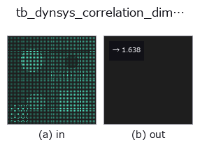

typed op• Data kinds: points → feature
• Call: fullseye.apply(img, "tb_dynsys_correlation_dimension", a=0.5, b=0.5) (2-D model = एक image + दो scalar knobs a,b∈[0,1])

*Figure synthetic 128×128 input पर सच में चलाकर मिला output है। बाईं ओर input, दाईं ओर output। Point clouds ऊपर से देखे गए scatter के रूप में (brightness = z), 1-D series line के रूप में, volumes z दिशा में maximum-intensity projection के रूप में, videos बीच के frame के रूप में, complex images amplitude के रूप में, और जो return values चित्र नहीं बन सकते वे स्वयं values के रूप में दिखाए जाते हैं।*
Knob a को बदलकर (0.1 / 0.5 / 0.9, दूसरा knob default पर):
▸ tb_dynsys_correlation_dimension: knob a को बदलने का figure (docs site)
*Knob b output नहीं बदलता (मापा गया: 0.1 / 0.5 / 0.9 पर एक जैसा)।*
Stages (पहले आने वाले ops → यह op, बाएँ से क्रम में):
▸ tb_dynsys_correlation_dimension: stages का figure (docs site)
Grassberger-Procaccia correlation dimension — log C(r) का slope।
> नीचे का विस्तृत विवरण मूल text में है — सारांश और headings का अनुवाद हो चुका है।
C(r) is the fraction of point pairs closer than r; for a self-similar set it grows like r**D, and *D* is read off the straight part of the log-log plot (fitted on the middle 60 % of the radii, where the curve is free of the small-r noise floor and the large-r saturation).
★Why this earns its place: unlike box counting it needs no grid, and its answers are known for simple sets — a circle gives 1, a filled square 2, a Cantor set log2/log3 = 0.6309. It measures a different quantity from the existing fractal_dimension (box counting), so the two are an independent pair rather than two names for one number.
Returns a measurement: the fitted dimension.
Raises ValueError: fewer than 32 points; not a 2-D array; non-finite input; a degenerate cloud (every point identical); a radius range that leaves no pairs.
Limits: sub-sampled to *max_points* (pairs grow quadratically). ★The dominant error is not the sub-sampling but the radius window: the default range is the 1st-25th percentile of pair distances, and on a *bounded* set its upper end runs into the boundary, where C(r) saturates and flattens the slope. Measured on a unit square (true D = 2): 1.879 with the default window and 1.873 / 1.879 / 1.871 at 400 / 1,500 / 3,000 points —— more points do not help; narrowing the window to r_lo=0.01, r_hi=0.1 gives 1.947 and 0.002 / 0.05 gives 2.050. Pass *r_lo* / *r_hi* explicitly when the answer matters, and report the window with the number.
Typed bridge of the math op dynsys_correlation_dimension into the 2-D evolution registry: the same implementation, called under the op(v, a, b) convention. a drives n_radii (default 24); b is unused.
• Sample data catalog (DL URL / license) — 2-D के लिए skimage.data (BSD/public) + synthetic, 3-D के लिए real data sources (Stanford/PDS आदि) के DL URL।
• Operators का स्रोत और संदर्भ — इस op family के मूल research/methods के स्रोत।
नीचे का program सच में चलता है, यह जाँचा गया है (figure वाला ही input)। Studio की help में यह block buttons बन जाता है, जिनसे इसे वहीं load करके चलाया जा सकता है।
img_to_points 0.50 0.50 tb_dynsys_correlation_dimension 0.50 0.50
▸ यह pipeline load करें · Load करके चलाएँ
नीचे के उदाहरण मूल ledger op dynsys_correlation_dimension को call करते हैं। यह bridge op वही implementation है, बस fn(v, a, b) convention के अनुसार ढाला गया है, इसलिए व्यवहार वैसा ही लागू होता है (केवल call का रूप अलग है)।
• poc_what_a_picture_cannot_check — py -3.11 examples/poc_what_a_picture_cannot_check.py
feature को input के रूप में लेते हैं)typed)tb_points_to_voxel · tb_estimate_point_normals · tb_iss_keypoints · tb_project_points · tb_render_point_depth · tb_statistical_outlier_removal · tb_radius_outlier_removal · tb_voxel_grid_downsample
*Provenance: ops.py — 2D operator registry. यह per-op note tools/opdocs.py md से अपने-आप generate होता है (हाथ से edit न करें)।*
© 2026 Kazufumi Furuse — Fullseye operator documentation. Licensed under Apache-2.0.